@robzsogoodX'te
“GTA VI PS5'te 30 FPS. Robz Play ile bilgisayarında 1080p, 60 FPS akıcılığında.”
Robz Play'i duyuran gönderi X'te hızla yayıldı ve çok paylaşıldı. Gönderinin tamamı ve konuşmalar X'te.
Gönderiyi X'te açGTA VI için tasarlandıÜcretsiz ve açık kaynakWindows 10 ve 11
Robz Play, PS5'ine ev ağı üzerinden Remote Play ile bağlanır ve PS5'te 30 FPS çalışan GTA VI'yı bilgisayarında 1080p, 60 FPS akıcılığında gösterir. Capture card gerekmez.
İndirme bağlantısı her zaman en son sürümü verir. Önceki sürümler ve değişiklikler: GitHub sürümleri.
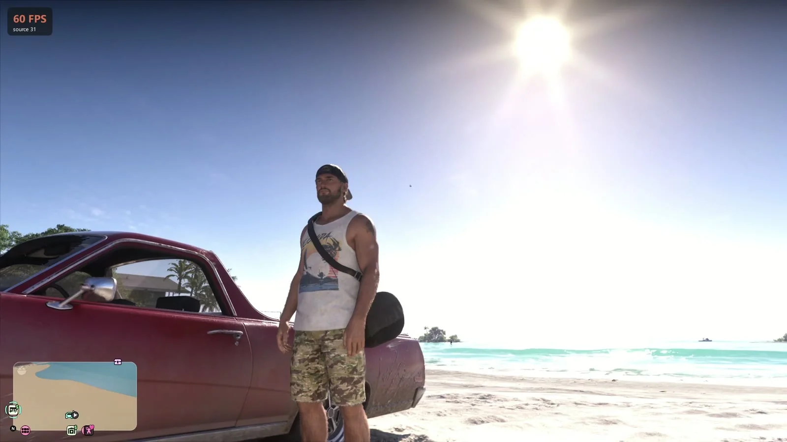
Aynı GTA VI kaydı: solda görüntünün 30 FPS'e indirilmiş hali, sağda Robz Play'in ekrana verdiği 60 FPS. Kamera dönüşlerinde ve araç sürerken fark hemen göze çarpar.
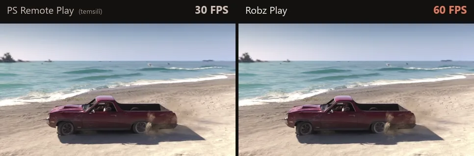
| PS Remote Play720p · 30 FPS ayarında | Robz Play | |
|---|---|---|
| GTA VI'da gördüğün kare hızı | 30 FPS | 60 FPS |
| Çözünürlük | 720p | 1080p |
| Kare üretimi | Yok | Var, ekran kartında |
| Kaynak kodu | Kapalı | Açık (AGPL-3.0) |
Karşılaştırma dürüst olsun: resmî PS Remote Play uygulamasında da çözünürlük 1080p'ye, yayının kare hızı 60'a çıkarılabilir. Ama o uygulama kare üretmez; GTA VI 30 FPS çalıştığı için ekranda gördüğün hareket yine 30 FPS olur. Farkı yaratan, Robz Play'in aradaki kareleri üretmesidir.
Ek donanım yok. Konsolun, bilgisayarın ve ikisinin bağlı olduğu ev ağı yeterli.
PS4 de olur. Konsolda Uzaktan Oynama açık olmalı (kurulum adımlarında gösteriliyor).
64 bit bir bilgisayar. 60 FPS için 60 Hz, 120 FPS için 120 Hz veya üstü bir ekran.
NVIDIA GTX/RTX, AMD Radeon RX ya da Intel Arc. Kare üretimini ekran kartı yapar; DLSS değildir, NVIDIA'ya özel değildir.
PS5 ile bilgisayar aynı ağda olmalı. İkisini de kabloyla modeme bağlamak en dengeli görüntüyü verir.
Konsolu uygulamaya bağlarken PSN hesabın bir kez bulunur: tarayıcıda giriş yaparak ya da çevrimiçi kimliğinle. chiaki-ng'de bağlı konsolun varsa bu da gerekmez.
Capture card, HDMI ayırıcı ya da ikinci bir cihaz. İşlemcinin içindeki tümleşik grafik ise yetmez: bir kare saniyeler sürer.
Ekran kartının bir ara kareyi yaklaşık 10 milisaniyenin altında üretebilmesi gerekiyor.
| Ekran kartı | Beklenti | Durum |
|---|---|---|
| Tümleşik grafik (Intel UHD, AMD Radeon Graphics) | Çalışmaz: bir kare saniyeler sürüyor | Ölçüldü AMD tümleşik: ~2,7 sn/kare |
| Giriş seviyesi ayrı kart (GTX 1650 sınıfı) | 60 FPS, "Hızlı" ayrıntı modunda mümkün olabilir | Tahmin denenmedi |
| Orta seviye (RTX 3060, RX 6600 XT sınıfı ve üstü) | 60 FPS, "Dengeli" modda | Tahmin denenmedi |
| RTX 4070 | 60 FPS "Dengeli": kare başına ~5-10 ms. 120 FPS deneysel olarak çalışıyor | Ölçüldü |
Şimdiye kadar yalnızca RTX 4070 ile gerçekten denendi; diğer satırlar tahmindir ve denendikçe güncellenecek. Kartın zorlanırsa Hareket ayrıntısı ayarını "Hızlı"ya al.
İlk dört adım hazırlık, sonrakiler uygulamanın içinde. Görüntüler Robz Play 0.4.1'den alındı; konsolun adresi ve kimliği "yayıncı modu" ile gizlendi.
RobzPlay-Setup.exe her zaman en son sürümdür. Ücretsizdir; indirmek için hesap ya da kayıt gerekmez.
Kurulum dosyası henüz imzalı olmadığı için Windows ilk çalıştırmada "Windows kişisel bilgisayarınızı korudu" uyarısını gösterebilir. Önce şuna, sonra buna bas:
Kurulumu tamamla; yönetici izni istemez. Robz Play %LOCALAPPDATA%\Programs\Robz Play klasörüne kurulur. Masaüstündeki ya da Başlat menüsündeki Robz Play kısayolundan aç.
Sıra önemli: önce kullanıcılar, sonra Uzaktan Oynama.
1) İkinci, boş bir kullanıcı ekle; boş bir oyun profili yeterli. Tek kullanıcı varsa PS5, Oyna'dan sonra o kullanıcıyı kendiliğinden seçip bağlantıyı ana menüye atabiliyor. İki kullanıcı olunca bağlantıdan sonra kimin oynayacağını sorar: ana profilin yerine ikinci (yan) profili seç. Bilgisayara bir kontrolcü bağlıysan ana profille de devam edebilirsin.
2) Giriş şifresini kaldır: profilinde PS5 giriş şifresi varsa kaldır; bağlantı sorunlarına yol açabiliyor.
3) Uzaktan Oynama'yı her profilde aç:
Konsol dinlenme modundayken de bağlanmak istersen buradaki iki seçeneği de aç:
Robz Play Türkçe açılır; İngilizce için sol menüdeki bayrağa bas. PS5 ile bilgisayar aynı ağdaysa konsolun ana ekranın üstünde kendiliğinden belirir. Ortada, oyunun nasıl gösterileceğini seçtiğin Görüntü modu bölümü durur.
Bilgisayarında chiaki-ng varsa Robz Play ilk açılışta onun ayarlarını ve kayıtlı konsollarını alır; konsolun zaten bağlıysa 6. adımı atla.
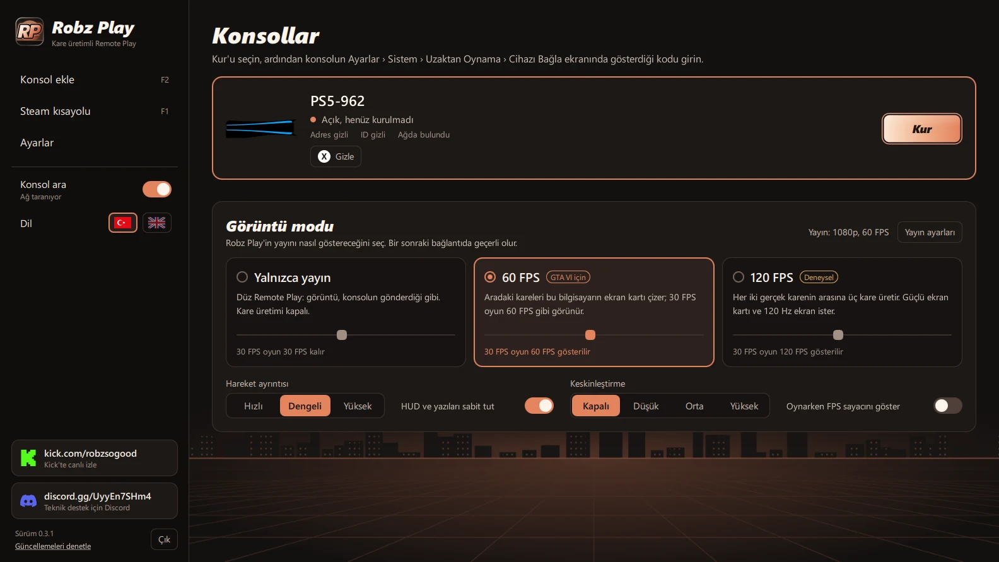
Konsolun kartındaki Kur'a bas. Açılan Konsolu kaydet ekranı dört adımda ilerler. Her adımın sağında o adımın ne işe yaradığı ve konsolda ne yapman gerektiği yazar; Geri ve Devam düğmeleri formun altındadır.
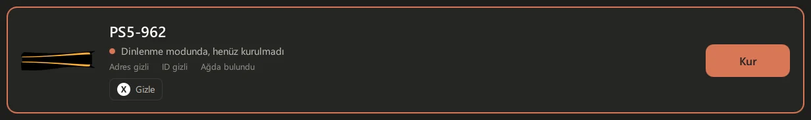
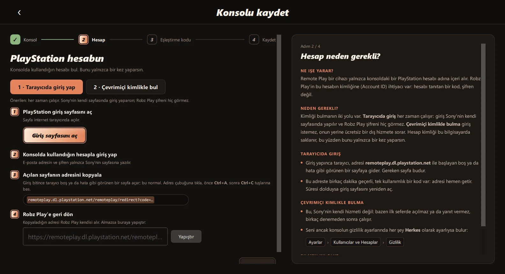
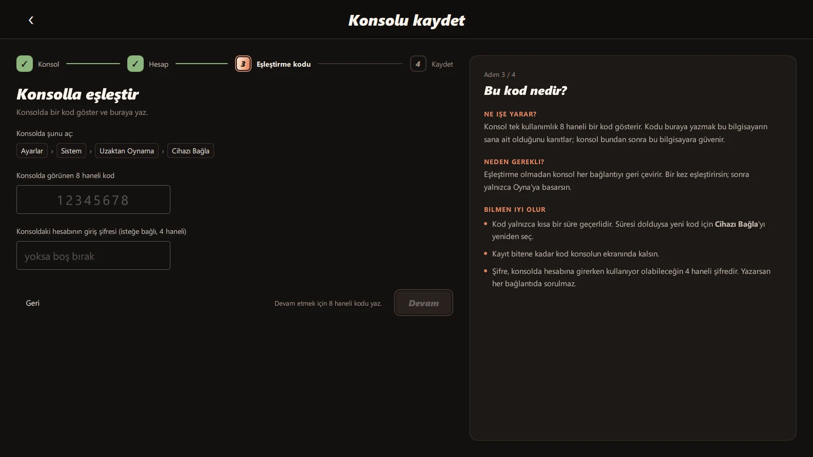
GTA VI için 60 FPS'i seç; varsayılan mod budur. Kare üretimi istemiyorsan Yalnızca yayın, güçlü bir kartın ve 120 Hz ekranın varsa deneysel 120 FPS. Mod bir sonraki bağlantıda geçerli olur. Altındaki Hareket ayrıntısı, HUD ve yazıları sabit tut, Keskinleştirme ve FPS sayacı da buradan değişir.
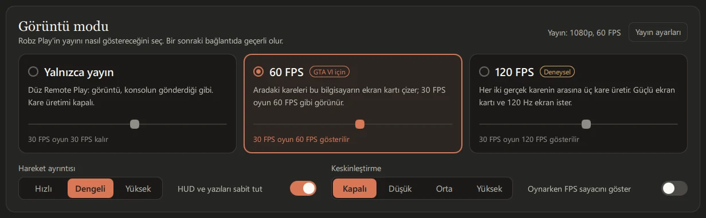
Konsol kaydedildikten sonra kartında Oyna düğmesi çıkar. Bastığında Robz Play PS5'e bağlanır; 4. adımdaki dinlenme modu ayarları açıksa uyuyan konsol da uyandırılır. Bağlantı kurulunca oyun görüntüsü gelir.
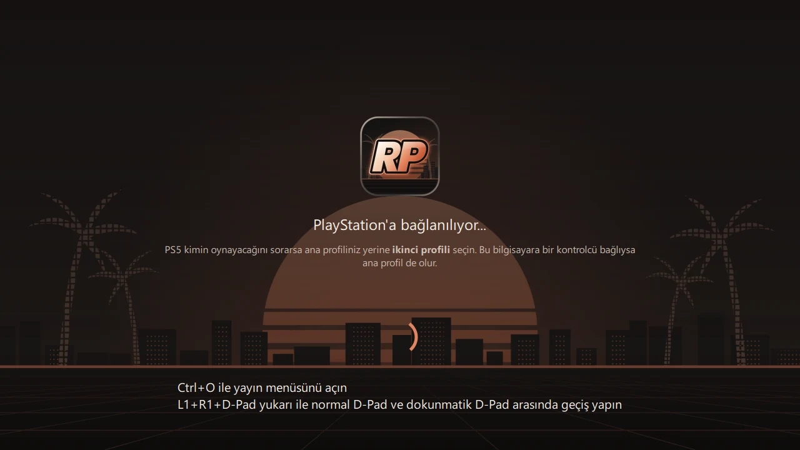
Ctrl + O yayın menüsünü açar: ses düzeyi, mikrofon, yakınlaştırma, keskinleştirme, FPS sayacı ve görüntü işleyici ayarları oyunu bırakmadan değişir.
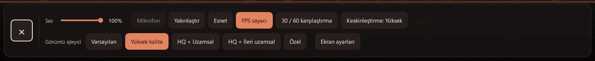
Sol menüdeki Ayarlar'da kare üretimi, görüntü, yayın, ses, konsollar, klavye ve kontrolcü ayarları bulunur. Parantez içindeki değerler varsayılandır. Yayın sayfasında ev içi (Yerel) ve ev dışı (Uzak) bağlantı için çözünürlük, FPS, bit hızı ve kodek ayrı ayrı seçilir.
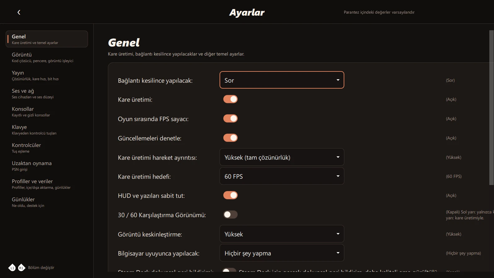
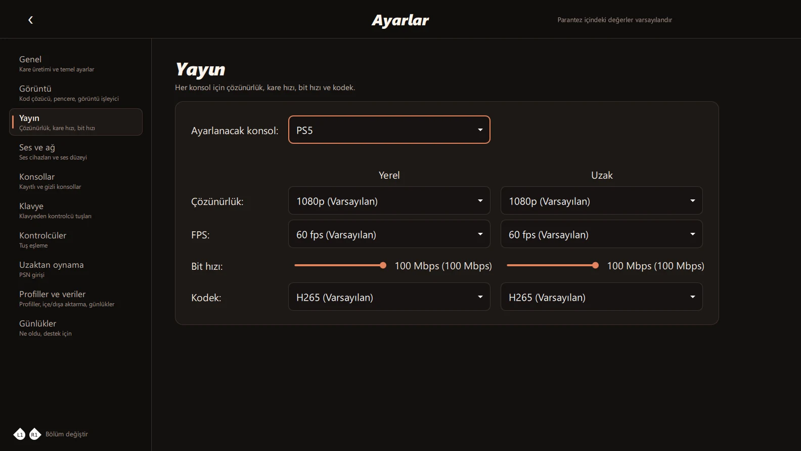
Kare üretimi zorunlu değil. Tek tıkla açılır, kapanır ya da hedefi değişir.
Düz Remote Play: 1080p, 60 FPS yayın, konsolun gönderdiği gibi. Kare üretimi kapalı, ek gecikme yok.
30 FPS çalışan GTA VI'da görülen 30 FPS
Aradaki kareleri bilgisayarının ekran kartı çizer; 30 FPS oyun 60 FPS gibi görünür. Varsayılan ve önerilen mod.
30 FPS çalışan GTA VI'da görülen 60 FPS
Her iki gerçek karenin arasına üç kare üretir. Güçlü bir ekran kartı ve 120 Hz veya üstü bir ekran ister.
30 FPS çalışan GTA VI'da görülen 120 FPS
PS5'ine ev ağından bağlan ve bilgisayarından oyna. Kare üretimi olmadan da kullanılır.
GTA VI ve 30 FPS'e kilitli diğer PS5 ve PS4 oyunları 60 FPS akıcılığında.
Can göstergesi, mini harita, altyazı gibi sabit öğeler üretilen karelerde yerinde kalır, titremez.
Sıkıştırılmış yayının kaybettiği netliği geri getirir; oyun sırasında anında değişir.
Gösterilen ve kaynak FPS'i birlikte gösterir. Görüntünün içine çizildiği için kayıtlara da girer.
Ctrl + O: ses, mikrofon, yakınlaştırma, keskinleştirme, FPS sayacı.
Uygulama Türkçe açılır; ana ekrandaki bayraklardan dil değişir.
İlk açılışta chiaki-ng'nin ayarlarını ve kayıtlı konsollarını alır. chiaki-ng'nin kendi ayarlarına dokunulmaz.
chiaki-ng temelli: DualSense desteği, PSN üzerinden ev dışından bağlanma, tuş eşleme, profiller.
Yeni "Gün batımı" logosu ve ona göre baştan boyanmış arayüz: sıcak mercan vurgular, koyu zemin, gün batımı arka planı.
Konsol kurulumu ve PSN girişi numaralı adımlarla anlatılıyor. Hesap kimliği iki yoldan bulunur; kayıt başarısız olursa nedeni ve çözümü yazar.
Ayarlar'da günlükler uygulamanın içinde okunur. "Fabrika ayarlarına döndür" her şeyi silip Robz Play'i ilk kurulumdaki gibi açar.
Ekranın sol yarısı kare üretimi olmadan, sağ yarısı Robz Play ile. Farkı aynı anda görürsün; OBS kayıtlarında da görünür.
Robz Play bu ayarlarla geliştirilip denendi. Görüntü işleyici olarak Vulkan seçili gelir, çünkü geliştiricinin görüntüden altyazı okuyan diğer uygulaması Robz Vision OpenGL görüntüsünü yakalayamıyor.
PS5 oyunu yine 30 FPS çalıştırır. Akıcılaşan, senin ekranında gördüğün görüntüdür.
Görüntü Remote Play ile 1080p, 60 FPS yayın olarak gönderilir; her kare iki kez gelir.
Görüntü sıkıştırılmış gelir ve FFmpeg ile çözülür.
Tekrar eden kareler ayıklanır; ekran kartı iki gerçek karenin arasındaki kareyi çizer.
Saniyede 30 gerçek + 30 üretilen kare, eşit aralıklarla.
Robz Play, chiaki-ng 1.10.1'in değiştirilmiş bir sürümüdür. Kaynak kodunun tamamı GitHub'da.
Cevabı burada bulamazsan Discord'a yaz; kurulum desteği ücretsiz.
Kurulum dosyası henüz imzalı olmadığı için Windows bu uyarıyı gösterebilir. Ek bilgi'ye, ardından Yine de çalıştır'a bas. İmzalı kurulum dosyası yol haritasında.
Önce en son sürümü kur: Windows kullanıcı adında ğ, ı, ş gibi Türkçe harfler olan bilgisayarlardaki açılış sorunu 0.3.0'da düzeltildi. Sorun sürerse günlüklere bak ve tanı dosyasını hazırla (aşağıda).
Başlat menüsündeki "Robz Play günlükleri" kısayolu günlük klasörünü açar: %APPDATA%\RobzPlay\RobzPlay\log
robzplay-acilis.log: her açılışta yazılır; bir önceki açılış robzplay-acilis-onceki.log olarak saklanır. Uygulama çökerse son satırda hangi dosyada çöktüğü yazar.chiaki_session_….log: her yayının kendi günlüğü.Kurulum klasöründeki (%LOCALAPPDATA%\Programs\Robz Play) Tani.bat dosyasına çift tıkla. Bilgisayarın, ekran kartının ve son açılışların bilgisini masaüstüne robzplay-tani.txt olarak yazar. Bu dosyayı Discord'da sorununu anlatırken ekle.
Hayır. Robz Play ilk açılışta chiaki-ng'nin ayarlarını ve kayıtlı konsollarını kendiliğinden alır; konsolu yeniden bağlaman gerekmez. chiaki-ng'nin kendi ayarlarına dokunulmaz.
0.3.0'dan itibaren yeni bir sürüm çıktığında Robz Play bir "Yenilikler" penceresinde değişiklikleri gösterir; "Şimdi güncelle" yeni sürümü indirir, kurar ve uygulamayı yeniden açar. Uygulama açılışta ve birkaç saatte bir kendisi bakar; beklemek istemezsen sol alttaki sürüm numarasının altındaki "Güncellemeleri denetle" bağlantısına bas. Güncelsen "Robz Play güncel" yazar. İstersen yeni RobzPlay-Setup.exe dosyasını indirip çalıştırman da yeter; ayarların ve kayıtlı konsolların korunur.
Kaldırmak için Windows'un "Yüklü uygulamalar" listesinden Robz Play'i kaldır. Ayarların Windows kayıt defterinde kalır.
Yayın açılıyor ama DualSense oyunda çalışmıyor ya da bağlantısı kopuyorsa, bunun sebebi PS5'te yalnızca bir kullanıcı profili olması. Robz Play, chiaki-ng ile aynı Remote Play bağlantısını kullanır ve bu bağlantıda uzaktan gelen kontrolcü için konsolda ikinci bir kullanıcı profili gerekiyor. Yani sorun kare üretiminden değil, Remote Play'in (ve chiaki-ng'nin) bu davranışından kaynaklanıyor.
Çözüm:
GTA VI için önemli: ana hesabınla satın aldığın bir oyunu ikinci profille oynayabilmek için ana hesapta o PS5 için Konsol Paylaşımı ve Çevrimdışı Oynama açık olmalı: PS5'te ana hesapla Ayarlar › Kullanıcılar ve Hesaplar › Diğer › Konsol Paylaşımı ve Çevrimdışı Oynama. Konsolda ilk kurulan hesapta bu genellikle zaten açıktır.
Menü adları PS5 sistem yazılımının sürümüne göre biraz farklı olabilir. Bu adımlardan sonra bağlantı hâlâ kopuyorsa Discord'da sor ve robzplay-tani.txt dosyasını ekle.
PS5'te Uzaktan Oynama'nın açık olduğundan (Ayarlar › Sistem › Uzaktan Oynama) ve PS5 ile bilgisayarın aynı ağda olduğundan emin ol. Ana ekranın solundaki Konsol ara anahtarı açık olmalı. Konsol dinlenme modundaysa Ayarlar › Sistem › Güç Tasarrufu › Dinlenme Modunda Kullanılabilen Özellikler bölümündeki iki seçenek de açık olmalı.
PS5'i ve bilgisayarı kabloyla modeme (router) bağla. Kablolu bağlantı en dengeli görüntüyü verir; Wi-Fi'da takılma daha sık görülür.
Ana ekrandaki Hareket ayrıntısı ayarını "Hızlı"ya al. Hareket, görüntünün dörtte biri çözünürlükte ölçülür ve iş yükü belirgin biçimde düşer. Kare üretimi yetişemediği anlarda Robz Play kare üretmeyi kendiliğinden atlar; görüntü donmaz. 120 FPS kullanıyorsan 60 FPS'e dön.
İşlemcinin içindeki tümleşik grafik kare üretimi için yetmez; Vulkan destekli ayrı bir ekran kartı gerekir. Kare üretimi olmadan oynamak için "Yalnızca yayın" modunu seç.
Hareket görüntüden tahmin edildiği için çok hızlı hareketlerde ve ince desenlerde üretilen karelerde bozulmalar görülebilir. 120 FPS modunda dört kareden üçü üretildiği için daha belirgindir. HUD ve yazıları sabit tut açık kalsın. Kartın kaldırıyorsa Hareket ayrıntısı'nı "Yüksek"e alabilirsin: daha temiz sonuç verir, ama ekran kartına yaklaşık üç kat daha ağırdır.
Kare üretimi biraz gecikme ekler: ara kareyi çizebilmek için bir sonraki gerçek kare beklenir (30 FPS'te yaklaşık 33 ms), Remote Play'in kendi gecikmesine ek olarak. Tek kişilik oyunlarda rahat oynanır; rekabetçi oyunlar için uygun değildir. Gecikmenin önemli olduğu oyunlarda "Yalnızca yayın" modunu seç.
Evet, Remote Play PSN hesabıyla ev dışından bağlanmayı destekler (Ayarlar › Uzaktan oynama › PSN'e giriş yap). Ama varsayılan 100 Mbps çoğu ev internetinin yükleme hızı için fazla: Ayarlar › Yayın sayfasındaki Uzak sütununda bit hızını düşür. Zayıf bağlantıda görüntü kalitesi ve gecikme kötüleşir.
Hayır. Görüntü PS5'ten ağ üzerinden, Remote Play ile gelir.
Hayır, DLSS değildir ve NVIDIA'ya ya da AMD'ye özel bir teknoloji kullanmaz. Kare üretimini açık kaynak RIFE v4.6 modeli ncnn ve Vulkan ile yapar; Vulkan destekleyen ayrı ekran kartlarında (NVIDIA GTX/RTX, AMD Radeon RX, Intel Arc) çalışır. Şimdiye kadar yalnızca RTX 4070 ile denendi.
DLSS oyunun içinde çalışır ve hareket bilgisini oyun motorundan alır. GTA VI ise PS5'te çalışıyor; bilgisayara yalnızca görüntü geliyor. Robz Play hareketi bu görüntüden tahmin eder. Bu yüzden her marka kartta ve Remote Play'de açılan her oyunda çalışır.
GTA VI için tasarlandı ve GTA VI oynanarak geliştirildi, ama Remote Play'in izin verdiği bütün PS5 ve PS4 oyunlarında çalışır. En büyük fark 30 FPS'e kilitli oyunlarda görülür; zaten 60 FPS çalışan bir oyunda 60 FPS modu bir şey eklemez.
Evet. Robz Play penceresini oyun yakalama kaynağı olarak ekle; üretilen kareler ve FPS sayacı kayda girer.
Kare üretimi HDR yayınla henüz denenmedi.
Ücretsiz ve açık kaynaktır (AGPL-3.0). Resmî bir ürün değildir: Sony Interactive Entertainment, Rockstar Games ya da Take-Two Interactive ile bağı yoktur ve onlar tarafından onaylanmamıştır.
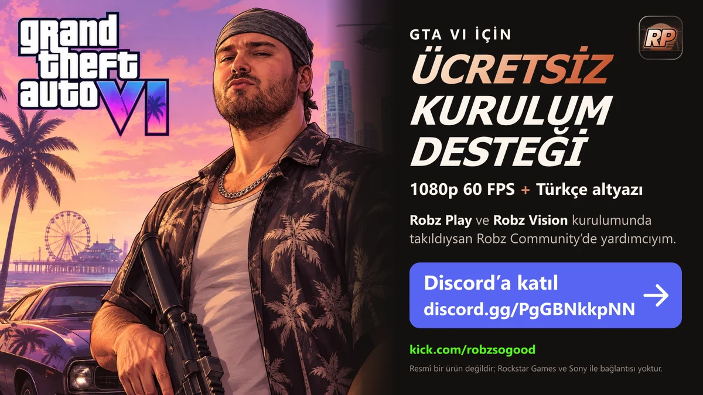
Robz Play'in kurulumunda ya da ilk bağlantıda takıldıysan Discord'da yardım ediliyor. Sorunu hızlı çözmek için:
robzplay-tani.txt yazılır.Hata bildirimi için GitHub'daki sorun listesi de açık.
Robz Play'i duyuran gönderi X'te hızla yayıldı ve çok paylaşıldı. Gönderinin tamamı ve konuşmalar X'te.
Gönderiyi X'te aç